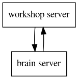

A Murmuring of Mesmerizing Starlings
An exploration in Boids.
What to expect
This book is used during the Boiding workshop. It allows you to explore Craig Reynold's boids that simulate flocking behavior of animals such as fish and birds.
But this is not a passive workshop! You get to explore the simulation by building it! We provide you with the background to understand the algorithm and a platform to explore it.
You will be implementing the brain of your own species of boids and see them flock on the big screen.
Cover Image
The image on the cover of this book is taken from the following tweet.
Perfectly timed picture captures the moment a murmuration of starlings took the form of a giant BIRD. pic.twitter.com/YwWwLX2ZLh
— Karen (@KLovesNature) January 2, 2018
Outline
Below we give an outline of the chapters to come.
In the background chapter we will illustrate the key ideas of Craig Reynolds algorithm. This is a mathematical description of the behavior of the boids.
The plan chapter provides an overview of the workshop. What your role as a participant is, what you can expect of the platform you will be communicating with, and tips and tricks how to have the most fun.
The last two chapters are divided between the web server you will be creating and how you can implement the web server to act as the brain of your boids.
Background
In the following sections we will learn about the concepts behind Boids as introduced by Craig Reynolds. It will create a conceptual background that aids us in implementing the algorithm.
If math is not your cup of tea, don't worry. In the chapter on the brain of the boid, we provide pseudo-code to illustrate the ideas in this chapter.
Craig Reynolds
Craig Reynolds simulated the coordinate movement of birds in 1986 and coined the term boids for these virtual creatures.
A very readable but extensive reference is Craig Reynolds own page on the subject.
Boid
A boid is a virtual creatures, much like a bird or a fish. You should get attached to it, because we are going to spend a lot of time with them. We are going to teach our boids how to move gracefully among their siblings.
You might not know it, but you have probably seen our friends before. If you are familiar with movies like The Lion King or Batman Returns, you have seen boids before. In The Lion King the stampede of wildebeests was created with a boids algorithm. The bats and also the penguins were similarly modeled in Batman Returns.
Although the original boids moved in a three dimensional world, to keep things simple we are going to restrict the movement of our boids to two dimensions.
Characteristics
In this section we will provide an high level overview of the characteristics of our boid. These pertain to the simulation we are going to perform, but feel free to attribute other characteristics.
Primary
The primary characteristics are the characteristics that one can measure. You can find them below.
Position
Maybe the most striking characteristic is the boids position. It keeps track of where the boid is. We describe it by two projections, i.e. the x coordinate and the y coordinate.
The world that the boids occupy wraps around on it self. This means that it doesn't have edges. If a boid moves off the right side of the world it enters on the left side of the world and vice versa. Similar for the top and bottom of the world.
We have made sure that the coordinates are normalized. The values it can attain will all lie between 0 and 1. E.g. a boid with an x value of 0 is found at the left side of the world, whereas a boid with an x value of 1 will find itself at the right side of the world.
Similarly, an y value of 0 corresponds with the top edge and an y value of 1 corresponds with the bottom edge.
Heading
An other primary characteristic of a boid is its heading, i.e. The angle it is pointing in. These angles are measured in radians and have a range of \(-\pi\) to \(+\pi\). When the boid is pointing to the right she has a heading of 0.
Speed
The speed measures how fast the boid is going. Together with the heading this makes up the velocity.
Secondary
The secondary characteristics are used in the simulation, but are less apparent than the primary characteristic.
Intended Heading
This is the heading your boid would like to have. It could differ from the primary heading and is used to steer the boid in order to avoid collisions or signal preferred direction.
Intended Speed
Like the intended heading, this is the speed the boid would want to move in.
Agility
The agility determines how quickly the boid can go from the current heading to the intended heading. Changing course takes times and that is reflected in this value.
It ranges from 0 to 1 where 0 represents a total inability to change heading and 1 represents the ability to instantly change course.
Acceleration
What agility is for heading, acceleration is for speed. It determines how quickly a boid can change it's current speeds.
Again, an acceleration of 0 corresponds with the inability to change speeds, whereas an acceleration of 1 corresponds with instantly changing speed.
Influence Sphere
This is the area in which other boids are sensed and as a result interacted with. It is a circle centered at the position of the boid and measured by a radius.
Key Ideas
The beauty of Reynolds boiding algorithm is that the complex organisation of a flock stems from a few local rules.
There is no director instructing each bird what to do, but each bird determines for her self what to do. The consideration she is making is balancing the following driving factors
- Seperation
- Alignment
- Cohesion
In the next chapters we will explain each of the different concepts.
Separation

One of the classic motivations for our boid is separation. Steer clear from your buddy boids to minimize the chances of collisions.
Calculation
Let the position of our boids be given by a sequence of coordinates \(p_{1} = (x_{1}, y_{1}), p_{2} = (x_{2}, y_{2}), \ldots, p_{n} = (x_{n}, y_{n})\).
We need to calculate the direction we see a boid in as seen from an different boid with position \(p = (x, y)\). The direction can be calculated by taking the difference of the position of the boid you are interested in and your own boid. I.e.
\[ d_{i} = p_{i} - p = (x_{i} - x, y_{i} - y) \]
From the sequence of directions we can determine a sequence of headings by taking the arctangent.
\[ h_{i} = \operatorname{arctan}\left(\frac{y_{i} - y}{x_{i} - x}\right) \]
We would like to choose a heading that avoids all of the headings \(h_{i}\), if we want to avoid a collision.
One way of doing this is averaging the headings and going in the opposite direction. The average can be calculated by
\[ h := \frac{1}{n} \sum_{i=1}^{n} h_{i} \]
our target direction could be \(h + \pi\), normalized to lie within \(\left(-\pi, \pi\right)\).
Alignment

Aligning yourself in the average heading of your cohort is an other motivation.
Calculation
Instead of working on the position of our cohort of boids, we are working with the headings. Let the heading of our boids be given by a sequence \(h_{1}, h_{2},\ldots,h_{n}\).
We would like to align our heading with the average of the heading in our cohort. The average is calculated by
\[ h := \frac{1}{n} \sum_{i=1}^{n} h_{i} \]
This is the heading our boid needs to move in if she wants to align herself to her cohort.
Cohesion

Predators attack on the outside of your cohort. It motivates boids to move to the center of the flock.
Calculation
Let the position of our boids be given by a sequence of coordinates \(p_{1} = (x_{1}, y_{1}), p_{2} = (x_{2}, y_{2}), \ldots, p_{n} = (x_{n}, y_{n})\).
The center of mass is calculated by averaging the positions. This assumes that the boids all weigh the same. Since our boids are virtual, we can mold them as we see fit.
The averaging can be done component-wise so the x-coordinate of the center of mass can be calculated with
\[ x_{c} = \frac{1}{n}\sum_{i=1}^{n} x_{i} \]
Likewise the y-coordinate of the center of mass isize
\[ y_{c} = \frac{1}{n}\sum_{i=1}^{n} y_{i} \]
Together this gives \(p_{c} = (x_{c}, y_{c})\) for the center of mass.
Now that we know the center of mass, we would like to figure out the heading a boid needs to fly in to head towards the center of mass. If the position of the boid is \(p = (x, y)\), the direction to fly in is found by subtracting the center of mass from the boid's position.
\[ d := p_{c} - p = (x_{c} - x, y_{c} - y) \]
We can calculate the heading from this by taking the arctangent ; \(\operatorname{arctan}(\frac{y_{c} - y}{x_{c} - x})\)
Others
The key ideas of the boiding algorithm are
- Separation
- Alignment
- Cohesion
But these do not have to be the only motivators.
One could imagine that the boids prefer a certain heading over others, because it aligns them with a magnetic field.
Or biods prefer a certain location, because it offers a wide variety of food.
Whatever the back story, you are challenged to play with different kind of motivators and see how that changes the behavior of the boids.
Plan
We will go over the high level plan for this workshop. We will detail all the moving parts and how they interact.
We will ask you to team up. Working in pairs has the added benefit that you can learn from each other. Your team is responsible for creating a web server that has the responsibility to answer the question what your boid wants to do. You will register your web server to the workshop server. The workshop server is responsible for coordinating the boids brains (your web servers) and the boids behavior (the simulation).
If this sounds daunting, relax. We went to great lengths to make this a joyous, interesting and stimulating workshop.
WLAN
We setup a Wireless Local Area Network (WLAN) so that the computers participating in the workshop can find each other without trouble. Look for a network with the following credentials
- SSID: boiding_workshop
- password: 2boid||!2boid
Starter Kits
We prepared starter kits in various languages. You can find them in the workshop material. Copy the starter of your choice and get ready to teaching your boids.
Your web server should listen on port 2643 which spells boid on a phone's keypad. Your starter kits already make this happen.
Register Your Server
The workshop server should become aware of your web server. Each starter kit has an automated way to register itself. See the README in your starter kit how the specific registration works.
Teach Your Boids
This is were you are able to shine. Teach your boids in anyway you see fit. The chapter about the brain will point you in the right direction.
Run The Server
Running your server allows your boids to roam free in their habitat and follow the path you thought them to follow.
Web Server
In this chapter we will describe the web server that you will be creating. If you are using a starter kit, most of what is described here is already taken care of.
Communication
An important part of the workshop is the simulation of multiple flocks of boids. This simulation is done by the workshop server. It keeps track of the different teams participating in the workshop. Each team has it's own flock of boids that they control.

Each team will run a server that will determine how their flock behaves. This is the brain server.
The workshop server will periodically send every teams brain server a request. In this request the brain server will find a representation of their flock. The response that the brain server will give it the intent of each boid. I.e. given this situation, what would each of your boids in your flock do.
You can find more details in the following chapters.
Responsibilities
Your brain server has a couple of responsibilities. Besides forming the brain of your boids, it also needs to convince the workshop server it is operating within well established parameters.
A lot of things can go wrong. And we need to check for those. One of the things that can go wrong is that your web server has stopped. Your web server must respond to a heartbeat request so we know you server is still participating.
/heartbeat
The workshop server periodically will send a
HEAD request
to your brain server. It should respond with a
204 indicating a successful request without
content.
This will tell the workshop server your web server is still running.
/brain
The workshop server needs to know how your boids are going to react to their
environment and peers. It will send a
POST request
with your current flock as JSON data. Your brain server
should figure out the intent of each boid in your flock and send their intentions
back as JSON.
The workshop server will take your response and integrate that in the simulation.
Representation
In this section we describe the JSON representation of the data that is sent to your brain server, as well as the representation that it is expected back.
Input
With the post to /brain you will get send JSON data representing your flock.
The JSON is an object with a field boids. Its value is an object that maps
boid names to their properties. Each property describes the corresponding boid.
Below you can find an example.
{
"boids": {
"boid-a": {
"x": 0.1,
"y": 0.2,
"heading": 1.0,
"speed": 0.030
},
"boid-b": {
"x": 0.3,
"y": 0.5,
"heading": 0.8,
"speed": 0.005
}
}
}
Output
Once you have calculated the intentions of your boids, you can send your response back. The response should map a boids name to its intended heading and speed. You do not have to include each and every boid in your flock, but this has the best result.
{
"boid-a": {
"heading": 1.2,
"speed": 0.5
},
"boid-b": {
"heading": 1.0,
"speed": 0.5
}
}
Brain
In this chapter we will focus on developing the brain. There is no particular order in which to develop the different parts of the brain. The background chapter will be used as inspiration but feel free to plot your own course.
In order to forego the tedium of creating a web server, we provided starter kits. This way you can dive in to the interesting part of developing the brain of your boids.
Because of that we will describe the various parts in pseudo code.